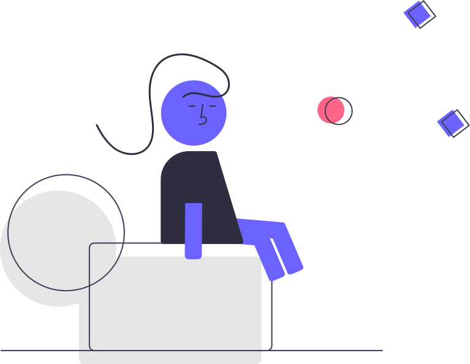

LLM基礎論 I
正しく使う
सही तरिकाले प्रयोग गर्नुहोस्
3つだけ持ち帰る
SECTION / 01
守る
जोगाउनुAIのリスクと対策AI को जोखिम र उपाय
SECTION / 02
使う
प्रयोग गर्नु今日から使える3原則आजदेखि प्रयोग गर्न सकिने ३ सिद्धान्त
SECTION / 03
伸びる
बढ्नु本当に重要なことसाँच्चै महत्त्वपूर्ण कुरा
AIは次の単語を
当てているだけ
LLMは「次にどの単語が来そうか」を確率で予測している装置。
"考えている" のではなく、"統計的にありそうな続き" を1単語ずつ出している。
सम्भावनाको आधारमा अनुमान गर्ने यन्त्र।
तथ्याङ्कीय रूपमा सम्भावित निरन्तरता
これがわかると、後で出てくるリスクの理由が一直線につながる
यो बुझे पछि जोखिमको कारण सीधा जोडिन्छ守る
AIを使う前に
知っておくべきこと
38%
社員が無断で機密情報を
AIに入力している
CybSafe × 全米サイバーセキュリティ連盟 / Oh, Behave! 2024-25
学習に使わせない設定 — 3サービス対応表
今日帰ったら必ずやる。1分で終わる。 आज फर्केपछि अवश्य गर्नुहोस्
設定しても "機密情報を入れていい" にはならない — "公開できない情報は入れない" が大原則
सेटिङ गरे पनि "गोप्य जानकारी हाल्न सकिन्छ" भन्ने होइन
AIは
堂々と嘘をつく
大手コンサルが架空の論文・判例を政府レポートに混入。発覚後の返金は契約額の約22%のみ。काल्पनिक शोधपत्र र न्यायिक निर्णय
Deloitte × Azure OpenAI GPT-4o / 豪政府DEWR / 2025
"わからない"が
言えない
LLMには「知らない」という選択肢がそもそも無い。
聞かれたら必ず"最も確率の高い続き"を返す。事実かは判定していない。
"थाहा छैन" भन्ने विकल्प नै छैन। तथ्य हो कि होइन जाँच गर्दैन
→ だから自信満々に嘘をつく。これがハルシネーションの正体。 आत्मविश्वासका साथ झूटो बोल्छ
AIがあなたの祖父を知るはずがない。それでも何かを返す
AI ले तपाईंको हजुरबुबालाई चिन्ने कुरै छैन। तर पनि केही उत्तर दिन्छ
ハルシネーション
選手権
1プロンプトでAIに最も嘘をつかせた人が優勝सबैभन्दा धेरै झूटो बोलाउने व्यक्ति विजेता
使う
今日から使える
3つの原則
今日から使える
3つだけ

整理 → 具体 →
構造
3つを順に通すと、AIは迷わず動く。AI अल्मलिँदैन
3原則でここまで変わる
[文章]
[文章]
###観点###
1. 論理の飛躍はないか
2. 主語と述語が合っているか
3. 重複表現はないか
4. 専門用語の説明不足はないか
###形式###
観点ごとに「問題箇所→修正案→理由」で1セット
###最後に###
全体評価を5段階で
A → 「いいと思います」で終わる。B → 赤入れ済みのレビューシートが返ってくる
A → "राम्रो लाग्छ" मा सकिन्छ। B → सच्याइसकेको समीक्षा पाना फर्कन्छ公開鍵暗号を小学生に説明させてみよう
AとBを試して比較。3原則の効果を体感する。
小学5年生（PC・ネットの知識ほぼゼロ）
###形式###
・身近なたとえ話を1〜2つ
・図解を1つ（半角・全角文字でその場に描く）
・最後に1行まとめ
###制約###
400字程度／専門用語禁止／数式禁止／mermaid・SVG・画像URL禁止
###最後に###
これがなかったら世の中で何が困るか、1行
伸びる
テクニックを超えて
本当に上達するために
テクニックより
要件定義力
プロンプトのコツは時代で変わる。差がつくのは「何を求めるか」を言葉にする力。प्रम्प्टका सुझावहरू समयसँगै बदलिन्छ। "के चाहिन्छ" भनेर शब्दमा व्यक्त गर्ने क्षमता

AIに先に質問させると
成果物の質が上がる
文書生成の対照実験で、「先に質問させる方」が有意に好まれた。पहिले प्रश्न सोधेको तर्फ स्पष्ट रूपमा रुचाइयो
Tix, B.J. (2024) Follow-Up Questions Improve Documents Generated by LLMs / arXiv:2407.12017 (プリプリント)
AIに先に質問させて
から書かせる
Slackのプロンプトの空欄を埋めてAIに投げる。
普通に依頼した場合と出力を比較。Slack को प्रम्प्टको खाली ठाउँ भर्नुहोस् र AI मा पठाउनुहोस्।
सामान्य अनुरोधसँग नतिजा तुलना गर्नुहोस्

今日持ち帰る3つ
必ず確認するअवश्य जाँच गर्नुहोस्
// AIは仕組み上、堂々と嘘をつくAI को संरचनागत कारणले, आत्मविश्वासका साथ झूटो बोल्छ
整理・具体・構造化व्यवस्थित · स्पष्ट · संरचना
// 3原則をまず守る३ सिद्धान्त पहिले पालना गर्नुहोस्
AIに引き出させるAI बाट निकाल्नुहोस्
// 迷ったら先に質問させるअल्मलिँदा पहिले प्रश्न सोध्न लगाउनुहोस्